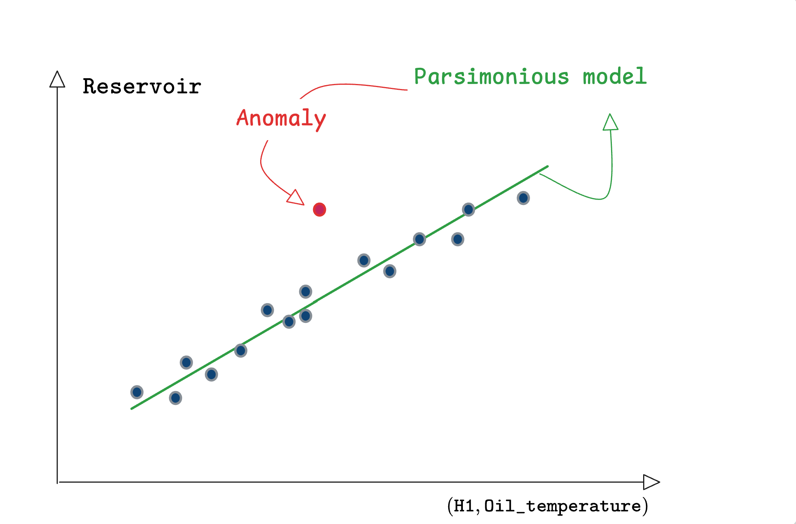

Parsimony & sparse models
Why parsimony is crucial in industrial data-driven solutions?
1 Introduction
In this section, we discuss the importance of parsimonious models when addressing the characterization of normality in industrial data, particularly in the framework of normality characterization and anomaly detection.
First of all, an informal discussion is proposed before a detailed use-case is shown that explicitly illustrates the relevance of deriving parsimonious models.
The words parsimony and sparsity are intimately linked and this is why sometimes, they are interchageably used. Roughly speaking, a model is described as parsimonious if it is defined through a vector of parameters that is sparse (contains many zeros).
Consequently, one can state that looking for sparsity, at the search step, induces parsimonious models.
2 Why sparsity is relevant in industry?
2.1 Anomaly detection
The parsimony, by helping avoiding hasardous excursions when the features go away from the domain spanned by the training data, improves the quality of the detection as it is suggested in the following sketchy representation:


This example shows that:
sparsity helps detecting true anomalies compared to nervous models that might wrongly visit irrelevant regions inducing false normality bias.
While this simple example highlights the relevance of sparsity in detecting true anomalies, the following discussion focuses on its role in avoinding false alarm upon changes in the context of use.
The need for sparsity in the industrial case stems from two major specificities, namely: The curse of contexts and the aversion to false alarms. This issues are explained hereafter.
2.2 The curse of context
One of the major obstacles to a correct normality characterization is linked to the fact that:
- The training data scarcely contains all possible contexts
- Take a robot for instance, the context of use might be represented by the types of trajectories, the types of tasks, the excursion of the kinematic or dynamic variables contained. On all these items, the training data might not represent all the different contexts.
The multiplicity of contexts of use and their highly probable absence in the training data enhances the risk of raising false alarm because of the resurgence of an unseen contexts rather than because of a real change in the system’s integrity or health parameters.
In the Anomalies vs operational changes section, a more detailed visual explanation of the state and context-induced anomalies that need to be distinguished from parameter changes (induced by faults) in dynamical systems.
2.3 The aversion to false alarms
Another specificity of industrial applications is that:
- Industry is very sensitive to false alarms
- Compared to a bad classification in images or an erroneous book recommendation:
a false alarm in the industrial context is much more cumbersome as it might trigger harmeful action such as stopping the production or triggering expensive human interventions.
Moreover, the risk of false alarm is increased by the fact that in order to detect anomaly rapidly, one needs to make a classification over short windows inducing a number of decisions per day that are quite important. As an example, imagine a decision that is based on the examination of a sliding window that lasts 10 seconds. This induces 360 decisions per hour and 2880 decision in a working day of 8 hours.
This means that with a false alarm rate of 1%, whcih is considered to be quite small in the everyday applications mentioned above, one should expect more than 28 false alarms per day which is obviously inacceptable and might lead to the alarm system being totally deactivated by the operators.
3 Sparsity and physics
knowledge based physical laws are known to be a major source of sparsity. As an example, consider the most famous physical law one can imagine, namely, the Newton law in its translational form:
\[ m\underbrace{\dfrac{d^2r}{dt^2}}_{a_{cc}} = F - \nu\underbrace{\dfrac{dr}{dt}}_{v} \tag{1}\]
This relation involves two coefficients which are, the mass \(m\) and the friction coefficients \(\nu\) while three sensors are involved, namely:
The acceleration \(a_{cc}\) (\(m.s^{-2}\))
The speed \(v\) (\(m.s^{-1}\))
The traction force (\(N\)).
The important fact here is the following:
Whatever is the context of use (high speed, high acceleration, deceleration, steady speed, random traction time profile), the relationship expressed by Equation 1 holds always true and only depends on the pair of scalars \(m\) and \(\nu\).
In other word, this relationship is context-independent. It represents a view of the normality of the system.
Now assume that the traction force is not measured and it is rather the angular position of the accelerator pedal that is measured, say \(\theta\). In this case, the raltionship, in terms of the new set of sensors, takes the form:
\[ m\underbrace{\dfrac{d^2r}{dt^2}}_{a_{cc}} = \underbrace{(k_1\theta+k_2\theta^2)}_{F} - \nu\underbrace{\dfrac{dr}{dt}}_{v} \tag{2}\]
where the quadratic expression \((k_1\theta+k_2\theta^2)\) is suppsed to represent the traction force1.
With this new set of measurement, it is Equation 2 that represents the normality of the system in a way that is still context-independent.
From the above simple and intuitive example, it comes out that:
Almost any context of use might be sufficient to capture the values of the parameters \((m, k_1, k_2, \nu)\) leading to a relationship that holds over all other unseen conttexts. Therefore no alarm would be raised when these unseen contexts arise because the residual remains small.
The mizopol package’s philosophy lies in the search for parsimonious relationships that are polynomial or piece wise-polynomial. This is inspired by the discussion above.
In the following section, a simple illustrative example is given to show the superiority of sparse solution in addressing the normality characteriation outside the space spanned by the samples present in the training dataset.
The following section shows another example of physical system highlighting the difference between a blind normality characterization and the one based on parsimonious physically-inspired normality characterization.
Footnotes
Assuming that the pair \((k_1,k_2)\) is identified via some factory data-acquisition experiments.↩︎